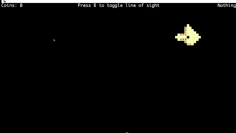
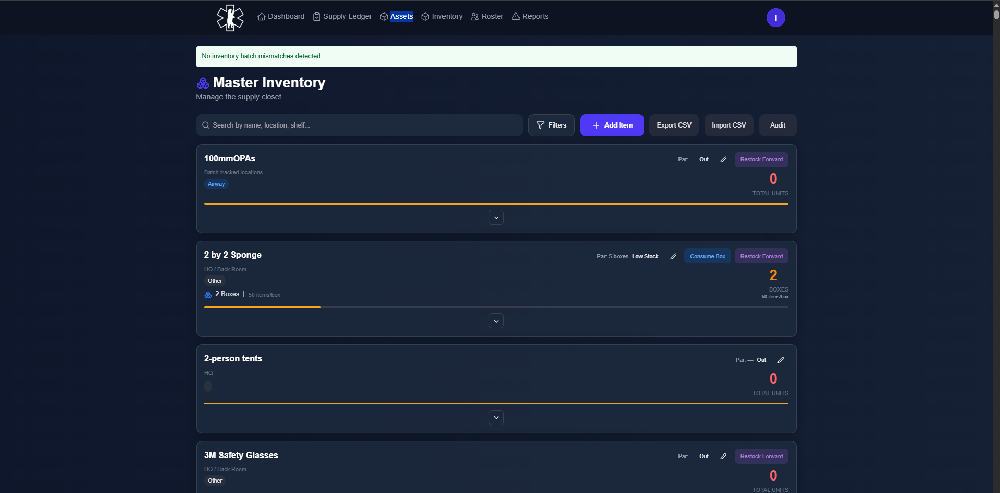

Projects
Public Projects
Provably Robust Deep Classifiers
January 2026 - PresentThis project builds neural networks that are provably resistant to adversarial attacks, following the work of Eric Wong and Zico Kolter.
- Neural networks can be tricked by tiny, invisible changes to images that cause them to misclassify inputs
- This project transforms the robustness problem into a form that allows us to mathematically guarantee protection against attacks
- Instead of just testing if attacks fail, we create a backward-pass network that computes a certificate proving no attack within a specific range can fool the model
- The model is trained to be inherently robust by incorporating these guarantees directly into the training process

Robustness certificate visualization and adversarial polytope analysis
Coevolutionary Trait Dynamics Analyzer
Oct. 2025 – PresentAnalyzed coevolutionary simulations to study the emergence, stability, and divergence of traits across successive life cycles. Validated per-generation trait updates from CSV outputs to ensure consistency with theoretical evolutionary dynamics. Applied statistical analysis and clustering methods to categorize evolutionary regimes and long-term trait outcomes.

Trait dynamics visualization across generations
Build Your Own World (BYOW)
Fall 2025A procedurally generated 2D world exploration game built for CS 61B at UC Berkeley. Features include world generation using seed-based algorithms, interactive gameplay, save/load functionality, and multiple ambition features including a Pac-Man style maze with collectibles, power pellets, and gates.

Procedurally generated maze with collectibles and power pellets


Diabetes Classifier
Apr. 2025 – June 2025Built a supervised ML pipeline achieving an F1-score of 0.84 (+14% over baseline) using KNN, Naive Bayes, and Extra Trees. Applied feature scaling, cross-validation, and hyperparameter tuning; visualized performance with Matplotlib.

Model performance metrics and visualizations
Medical Projects
ProteinLLMV1 — Protein Language Model
Dec. 2025 – PresentBuilding a protein language model (LLM) from scratch based on the nanoGPT architecture to predict protein function, enzymatic activity, and subcellular localization. The system combines a custom-trained transformer with state-of-the-art tools like ESMFold for 3D structure prediction, served through a full-stack web application (FastAPI backend + React/Next.js frontend).
BLOSUM62 Substitution Matrix: A log-odds scoring matrix where each cell BLOSUM[i][j] encodes the evolutionary likelihood of amino acid i being substituted by j. Positive scores represent biologically favored substitutions (e.g., Leu↔Ile); negative scores penalize dissimilar swaps. It informs the model's embedding initialization and similarity-aware loss functions.

BLOSUM62 substitution matrix — blue = conserved substitutions, red = penalized substitutions
ESMFold Integration: ESMFold (Meta AI) predicts 3D protein structures directly from sequence in seconds — without needing multiple sequence alignments. The system pipes protein sequences through ESMFold to produce atomic-level coordinates colored by per-residue confidence (pLDDT score), visualized interactively in the web UI via Mol*/NGL Viewer.
nanoGPT Architecture: The model is adapted from Karpathy's nanoGPT with a protein-specific tokenizer (20 amino acids + special tokens), 12 transformer layers, 12 attention heads, and 768-dimensional embeddings. Pre-training uses Masked Language Modeling (MLM) on UniProt/Swiss-Prot sequences; fine-tuning targets GO term prediction, EC number classification, and localization.
BMRC Logistics - Medical Inventory Management System
November 2025 - PresentA comprehensive web application developed for the Berkeley Medical Reserve Corps (BMRC) to track and manage their medical storage, medicines, and resources. The system provides real-time inventory tracking with expiration monitoring capabilities, helping BMRC maintain accurate records of available stock and identify expired items efficiently.
Backend: Built with modern server-side technologies to handle inventory data, user authentication, and real-time updates. The backend manages the database operations for tracking supplies, medicines, and their expiration dates.
Frontend: Responsive user interface that allows BMRC staff to easily view, search, and update inventory records. Features include visual indicators for stock levels and expiration warnings.

Medical inventory management dashboard

Master Inventory Interface
Demo Login: Test@gmail.com / test123